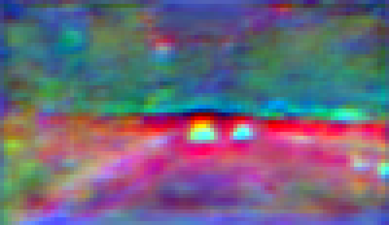
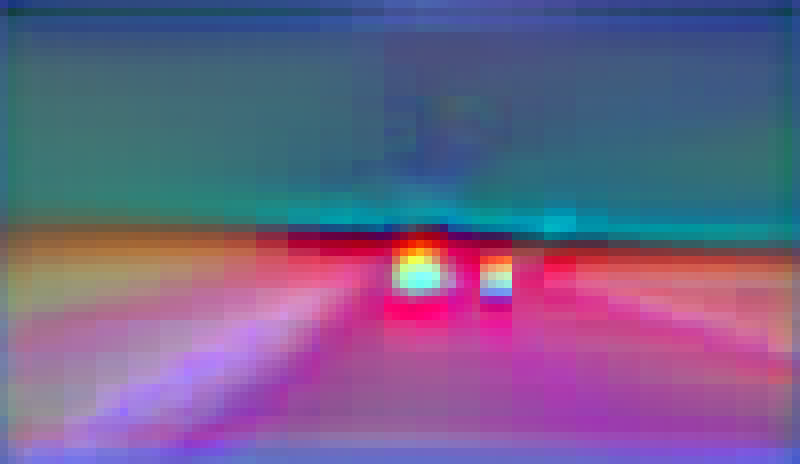

Predict features
Generate observations at the driving model’s feature interface, supervised by real images.
Introducing JEPA-SIM
Render-free closed-loop driving simulation.
Predict the visual features a driving policy needs, directly. A world model that closes the observation–action loop while keeping the driving model frozen.
Pure camera input, before prediction.
A different observation space
Driving models act on visual features. JEPA-SIM learns to predict those features from history, executed ego motion, and scene layout—removing repeated RGB rendering and image encoding from the simulation loop.
Real-image features from the same frozen encoder provide the training targets. Downstream perception and planning stay frozen.
See how it worksGenerate observations at the driving model’s feature interface, supervised by real images.
Condition the next observation on executed motion and camera-space agent and map layouts.
Train on predicted feature histories to expose the model to errors that accumulate during rollout.
Model architecture
One learned observation model. A frozen driving policy.
An action-conditioned loop between them.
Projected agents and map elements align scene structure with each camera’s feature grid. Render-free means no RGB scene rendering; geometric projection remains.
After real observations initialize the loop, predicted features feed both the frozen policy and the next prediction. Rollout training mirrors this recurrence.
Inside the representation
Matched camera features, viewed through the same PCA projection. Color reveals representation structure, not reconstructed RGB appearance.


Closed-loop driving / recorded replay
One frozen driving policy. Two observation models.
RGB rendering on the left. Layout conditioning on the right.
Bird’s-eye views show how each drive unfolds.
Evaluation
Measure whether simulated observations lead the same frozen driving model to produce plans consistent with its real-image reference.
Read the full evaluationFrozen UniAD · 150 validation scenes · 3,878 matched targets per offset
| Observation | ADE m | FDE m | Latency s/step |
|---|
Protocol. On-log autoregressive observations; frame-level mean agreement with real-image reference plans. The observation offset is distinct from the planning horizon. All methods use the same matched target set.
Timing. Total observation latency includes rendering or feature prediction plus image encoding. It excludes downstream planning and control. A dash means not reported. Values reproduce the manuscript’s nuScenes comparison; no statistical significance is asserted.
The paper also evaluates OpenScene with Latent TransFuser and in-house closed-loop execution. The simulator depends on a specific feature interface and privileged layouts; surrounding agents follow recorded tracks. Agreement with recorded execution does not establish counterfactual physical fidelity or real-world safety.
Resources
Render-Free Closed-Loop Driving Simulation
The method, experiments, and limitations.
Open manuscriptSupplementary material · PDFArchitecture, training, and additional results.
Open supplementPublic repository and checkpoint links will be added when released.
Not yet released